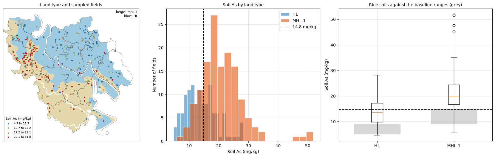
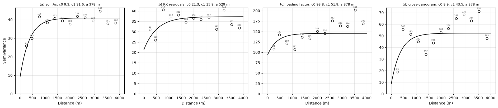
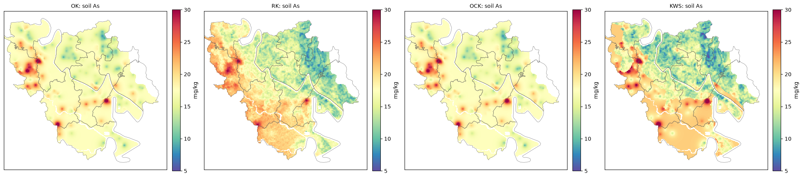
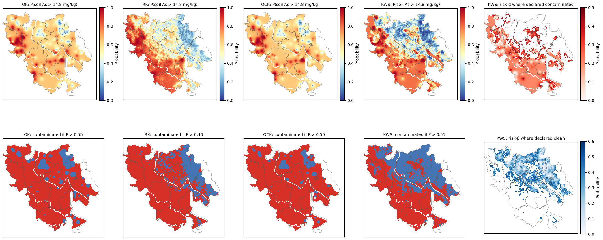
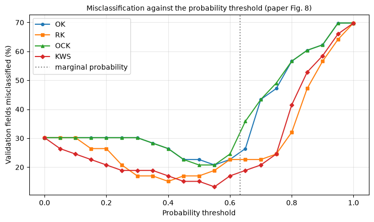
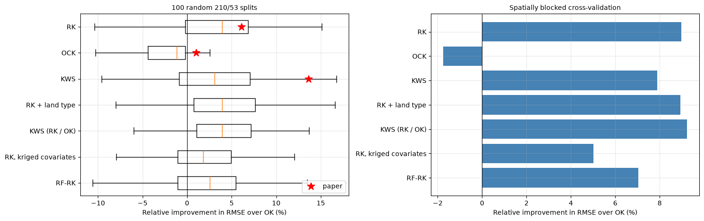
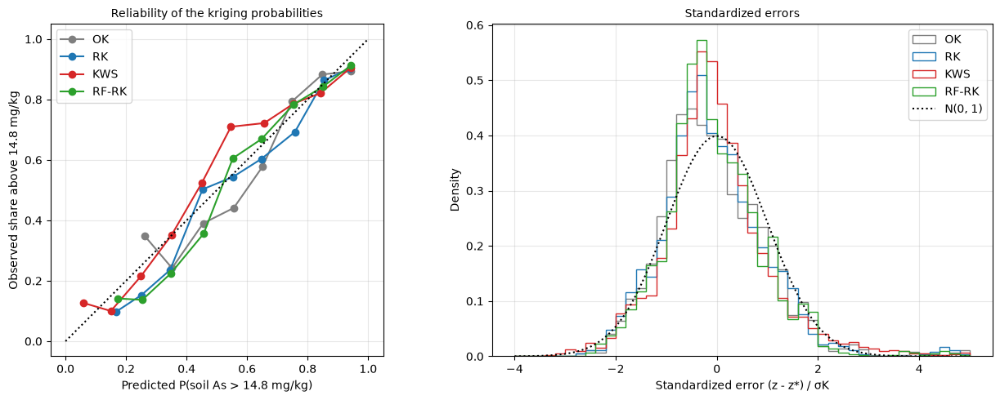
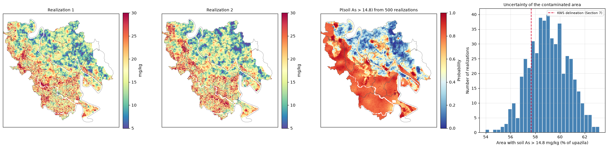
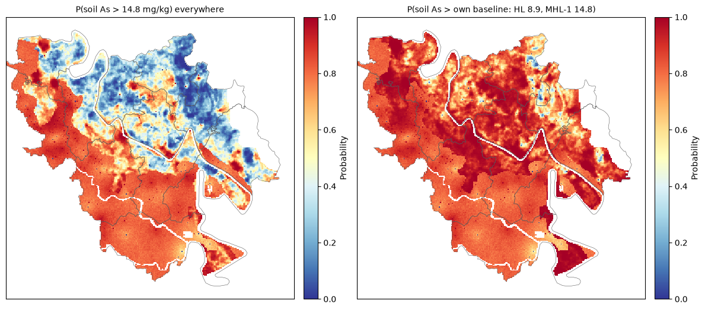
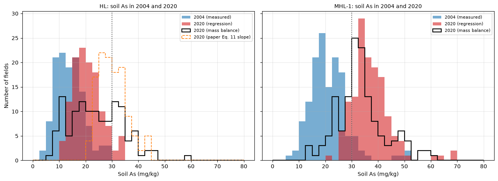

Uncertainty of Geostatistical Risk Mapping of Paddy Soil Arsenic
A geostatistical capstone: replicating and extending Ahmed et al. (2011) for Tala Upazila, Bangladesh
This is Capstone 3 of the geostatistics module (Part 9). It replicates the analysis of
Ahmed, Z. U., Panaullah, G. M., DeGloria, S. D. and Duxbury, J. M. (2011). Factors affecting paddy soil arsenic concentration in Bangladesh: prediction and uncertainty of geostatistical risk mapping. Science of the Total Environment, 412-413, 324-335.
with the same 263 paddy fields, and then tests how robust its conclusions are. Capstones 1 and 2 used arsenic in groundwater and rice grain. This one is about the soil, where arsenic from irrigation water accumulates year after year.
Dataset: 263 paired irrigation-water and paddy-soil samples from shallow tube-well (STW) command areas, 122 on highland (HL) and 141 on medium highland type 1 (MHL-1) (Data/00_shared/data_geostatistics/Arsenic - Tala/tala.csv and All_data.csv), and an 86 m prediction grid with land type, elevation and kriged water As and Fe (Tala_grid.csv).
Target: Arsenic in paddy soil (SAs, mg/kg) and the probability that it exceeds 14.8 mg/kg, the upper baseline concentration estimated in the paper from 74 non-rice soils.
Library:geolattice.geostatistics
Overview
The paper asked two questions: which factors control soil As in rice fields, and which kriging method best maps the fields where soil As exceeds its natural background. It compared four methods on one random split of the data (210 calibration and 53 validation fields) and concluded that kriging within strata (KWS), regression kriging on highland and cokriging on medium highland, gave the most accurate map and the fewest misclassified fields.
A single split of 53 fields is a small test. This notebook first reproduces the paper’s tables and figures, then asks what a reader should still trust after more demanding checks.
Objectives
Part
Question
Sections
Replication
Do the summary statistics, regression models, variograms, validation scores and contaminated areas of the paper come out of this data?
1 to 7
Improvement 1
Does the ranking of methods survive 100 random splits and a spatially blocked cross-validation? Do other trend models help?
8
Improvement 2
Are the kriging probabilities well calibrated?
9
Improvement 3
How uncertain is the contaminated area itself? (conditional simulation)
10
Improvement 4
What changes if each land type is judged against its own background?
- Variogram (estimator='cressie') -> robust variogram model objects
- OrdinaryKriging, SimpleKriging -> OK, and kriging of regression residuals (RK)
- Cokriging, CrossVariogram -> ordinary cokriging with the As loading factor (OCK)
- fftsim -> FFT conditional Gaussian simulation on the 86 m lattice
- nscore_forward -> normal-score transform
- scikit-learn: RandomForestRegressor, GroupKFold
All kriging classes in geolattice.geostatistics return the kriging standard error when called with return_variance=True, so it is squared below wherever a variance is needed.
Setup
Installation. This notebook needs installation option 4 (core, spatial analysis, spatial statistics and geostatistics): pip install "geolattice[geostats]". See “Installation options” in the GeoLattice README.
Code
%matplotlib inlineimport sys, time, warningswarnings.filterwarnings("ignore")# Keep TensorFlow out of this process (optional regression-kriging backends).sys.modules.setdefault("tensorflow", None)# Kriging, cokriging, normal scores, and FFT conditional simulation.from pathlib import Pathimport numpy as npimport pandas as pdimport geopandas as gpdimport matplotlib.pyplot as pltfrom matplotlib.colors import ListedColormap, BoundaryNormfrom scipy.optimize import minimizefrom scipy.spatial import cKDTreefrom scipy.spatial.distance import pdistfrom scipy.stats import norm, t as student_tfrom sklearn.ensemble import RandomForestRegressorfrom sklearn.model_selection import GroupKFoldimport geolattice.geostatistics as gstatfrom geolattice.geostatistics import Variogram, OrdinaryKriging, SimpleKriging, Cokriging, fftsim, nscore_forwardfrom geolattice.geostatistics.kriging.cokriging import CrossVariogramfrom geolattice.geostatistics.utils.backend import cupy_gpu_usable# Plot defaults. SEED fixes the repeated splits and the simulations.plt.rcParams["figure.dpi"] =100plt.rcParams["axes.grid"] =Trueplt.rcParams["grid.alpha"] =0.3pd.set_option("display.max_colwidth", None)SEED =42# cupy_gpu_usable() runs a real kernel, so an installed but unusable CuPy stays on CPU.USE_GPU = cupy_gpu_usable()print("geolattice.geostatistics :", gstat.__version__)print("Backend :", "GPU (CuPy)"if USE_GPU else"CPU (NumPy)")Z_CRIT =14.8# mg/kg, upper baseline soil As (MHL-1 non-rice soils, Table 1 of the paper)BASELINE = {"HL": (5.2, 8.9), "MHL-1": (9.1, 14.8)} # mg/kg, baseline ranges for each land typeN_REPEATS =100# random 210/53 splits in Section 8N_SIM =500# conditional simulations in Section 10
tala.csv holds the soil and site variables for the 263 rice fields and All_data.csv the water chemistry of the same STWs. They are joined on the field ID. The variables used by the paper are:
Paper
Column
Unit
Soil As
sas
mg/kg
Irrigation water As (WAs)
WAS
mg/L
Irrigation water Fe (WFe)
WFE
mg/L
Land elevation
elev
m
Years of STW operation
yr
years
As loading factor
WAS x yr
(mg/L) x years
Land type
Land_type
HL or MHL-1
The 74 non-rice soils that the paper used to estimate the baseline are not in these files, so the baseline values are taken from the paper. The grid stores the land type as 1 (HL) and 2 (MHL-1).
Code
# Walk up from the working directory until the Tala soil table is found.ROOT = Path.cwd().resolve()whilenot (ROOT /"Data"/"00_shared"/"data_geostatistics"/"Arsenic - Tala"/"tala.csv").is_file():if ROOT.parent == ROOT:raiseFileNotFoundError("Could not find Data/00_shared/data_geostatistics/Arsenic - Tala/tala.csv. Run this notebook from the GeoLattice repository.") ROOT = ROOT.parentDATA_DIR = ROOT /"Data"/"00_shared"/"data_geostatistics"/"Arsenic - Tala"# Join the soil table to the irrigation-water chemistry on the field ID.tala = pd.read_csv(DATA_DIR /"tala.csv")water = pd.read_csv(DATA_DIR /"All_data.csv")df = (tala[["ID", "x", "y", "Land_type", "sas", "elev", "yr", "DIS"]] .merge(water[["ID", "WAS", "WFE", "WP"]], on="ID", validate="one_to_one"))df["Land_type"] = df["Land_type"].replace({"MHL": "MHL-1"})df["HL"] = (df["Land_type"] =="HL").astype(int)df["LF"] = df["WAS"] * df["yr"] # As loading factor# Field coordinates in metres, and the highland indicator used by the stratified methods.xy = df[["x", "y"]].to_numpy(float)z = df["sas"].to_numpy(float)HL = df["HL"].to_numpy()# Prediction grid: coordinates are stored to 0.1 m, so they are snapped to the exact 86.43 m latticegrid = pd.read_csv(DATA_DIR /"Tala_grid.csv").rename(columns={"ELEV": "elev"})ux, uy = np.sort(grid["x"].unique()), np.sort(grid["y"].unique())DX, DY = (ux[-1] - ux[0]) / (len(ux) -1), (uy[-1] - uy[0]) / (len(uy) -1)grid["x"] = ux[0] + np.round((grid["x"] - ux[0]) / DX) * DXgrid["y"] = uy[0] + np.round((grid["y"] - uy[0]) / DY) * DYgxy = grid[["x", "y"]].to_numpy(float)gHL = (grid["Land_type"] ==1).to_numpy().astype(int)# Cell area in hectares, and the union outlines drawn on the maps.CELL_HA = DX * DY /1.0e4unions = gpd.read_file(DATA_DIR /"tala_union.shp")# Nearest grid node of each field, used later to copy gridded covariates onto the fields._, nearest_node = cKDTree(gxy).query(xy)print(f"Fields: {len(df)} (HL {HL.sum()}, MHL-1 {(1- HL).sum()})")print(f"Grid: {len(grid):,} nodes at {DX:.1f} m ({len(grid) * CELL_HA:,.0f} ha), HL share {gHL.mean():.1%}")print(f"Land type of the field equals the land type of its grid node for {np.mean(gHL[nearest_node] == HL):.1%} of fields")
Fields: 263 (HL 122, MHL-1 141)
Grid: 41,345 nodes at 86.4 m (30,888 ha), HL share 59.8%
Land type of the field equals the land type of its grid node for 95.8% of fields
Code
# Moments of soil As, including skewness after a log10 transform.def soil_summary(v): lv = np.log10(v)return pd.Series({"N": len(v), "CV_pct": 100* v.std(ddof=1) / v.mean(), "skewness": pd.Series(v).skew(),"min": v.min(), "max": v.max(), "mean": v.mean(), "SD": v.std(ddof=1), "median": np.median(v),"log10_skewness": pd.Series(lv).skew(), "GM_log10": lv.mean(), "GSD_log10": lv.std(ddof=1)})table1 = pd.DataFrame({"Rice soil": soil_summary(z), "HL": soil_summary(z[HL ==1]), "MHL-1": soil_summary(z[HL ==0])}).T# Published rice-soil figures from Table 1, set beside the values just computed.paper_t1 = pd.DataFrame({"N": [263, 122, 141], "mean": [17.2, 14.1, 21.2], "SD": [7.4, 5.3, 7.4], "min": [4.7, 4.7, 5.7],"max": [51.8, 28.2, 51.8], "skewness": [1.22, 0.60, 1.51]}, index=table1.index)display(table1.round(2))print("Paper, Table 1 (rice soils):")display(paper_t1)
N
CV_pct
skewness
min
max
mean
SD
median
log10_skewness
GM_log10
GSD_log10
Rice soil
263.0
41.30
1.22
4.7
51.8
17.89
7.39
17.2
-0.35
1.22
0.18
HL
122.0
37.89
0.60
4.7
28.2
14.09
5.34
13.6
-0.29
1.12
0.17
MHL-1
141.0
34.75
1.51
5.7
51.8
21.17
7.36
20.0
-0.13
1.30
0.14
Paper, Table 1 (rice soils):
N
mean
SD
min
max
skewness
Rice soil
263
17.2
7.4
4.7
51.8
1.22
HL
122
14.1
5.3
4.7
28.2
0.60
MHL-1
141
21.2
7.4
5.7
51.8
1.51
Code
# Union outlines, equal aspect, and no axes, shared by every map.def base_map(ax, title=None): unions.boundary.plot(ax=ax, color="0.35", linewidth=0.4) ax.set_aspect("equal") ax.set_xticks([]); ax.set_yticks([]); ax.set_xlabel(""); ax.set_ylabel("") ax.grid(False)if title: ax.set_title(title, fontsize=10)# Column and row of each grid node on the lattice.g_col = np.round((gxy[:, 0] - ux[0]) / DX).astype(int)g_row = np.round((gxy[:, 1] - uy[0]) / DY).astype(int)def to_raster(values): r = np.full((len(uy), len(ux)), np.nan) r[g_row, g_col] = valuesreturn r# Write node values onto the lattice. Nearest shading keeps each cell's own value.def plot_grid(ax, values, title, cmap="Spectral_r", vmin=None, vmax=None, label="", norm_=None, cbar=True): im = ax.pcolormesh(ux, uy, to_raster(values), cmap=cmap, vmin=vmin, vmax=vmax, norm=norm_, shading="nearest") base_map(ax, title)if cbar: plt.colorbar(im, ax=ax, label=label, fraction=0.046, pad=0.03)return im# Fields coloured by soil-As quartile, on the highland and medium-highland background.fig, axes = plt.subplots(1, 3, figsize=(17, 5.4))lt_cmap = ListedColormap(["#e6d8ad", "#9ecae1"])plot_grid(axes[0], gHL.astype(float), "Land type and sampled fields", cmap=lt_cmap, vmin=0, vmax=1, cbar=False)q = np.quantile(z, [0.25, 0.5, 0.75]); cls = np.digitize(z, q); edges = np.r_[z.min(), q, z.max()]for k, c inenumerate(["#2b83ba", "#abdda4", "#fdae61", "#d7191c"]): m = cls == k axes[0].scatter(xy[m, 0], xy[m, 1], s=12, c=c, edgecolors="k", linewidths=0.2, label=f"{edges[k]:.1f} to {edges[k +1]:.1f}")axes[0].legend(title="Soil As (mg/kg)", fontsize=7, title_fontsize=8, loc="lower left")axes[0].text(0.99, 0.99, "beige: MHL-1\nblue: HL", transform=axes[0].transAxes, ha="right", va="top", fontsize=8)# Histograms and boxplots against 14.8 mg/kg. Grey bands are the baseline ranges.for lt, colr in [("HL", "#3182bd"), ("MHL-1", "#e6550d")]: axes[1].hist(df.loc[df.Land_type == lt, "sas"], bins=20, alpha=0.6, color=colr, label=lt, edgecolor="white")axes[1].axvline(Z_CRIT, color="k", ls="--", label="14.8 mg/kg")axes[1].set_xlabel("Soil As (mg/kg)"); axes[1].set_ylabel("Number of fields"); axes[1].set_title("Soil As by land type", fontsize=10); axes[1].legend()axes[2].boxplot([df.loc[df.Land_type == lt, "sas"] for lt in ["HL", "MHL-1"]], tick_labels=["HL", "MHL-1"])axes[2].axhline(Z_CRIT, color="k", ls="--")for lt, (lo, hi) in BASELINE.items(): xpos =1if lt =="HL"else2 axes[2].fill_between([xpos -0.3, xpos +0.3], lo, hi, color="0.7", alpha=0.5)axes[2].set_ylabel("Soil As (mg/kg)"); axes[2].set_title("Rice soils against the baseline ranges (grey)", fontsize=10)plt.tight_layout()plt.show()

Reading the results. The rice-soil statistics match Table 1 of the paper: 122 HL fields with a mean of 14.1 ± 5.3 mg/kg, 141 MHL-1 fields with 21.2 ± 7.4 mg/kg, the same ranges and the same skewness (0.60 and 1.51). The only difference is the mean of all rice soils, 17.9 here against 17.2 in the paper. The paper’s value equals its own median and is probably a transcription slip.
Both land types sit well above their non-rice baselines (grey bands): 82% of HL fields exceed the HL upper baseline of 8.9 mg/kg. Soil As is higher in MHL-1, in the south and south-west of the upazila, and a few MHL-1 fields above 40 mg/kg form the upper tail. The land type recorded for a field agrees with the grid land type map at 96% of the fields, so the map is a usable stratification for KWS.
Factors affecting soil arsenic
The paper reports Pearson correlations of soil As with site and water variables, and four multiple regression models. They are refitted here by ordinary least squares.
Code
# Pearson correlations with soil As, for all fields and within each land type.VARS = {"WAS": "water As", "WFE": "water Fe", "WP": "water P", "elev": "elevation", "yr": "STW years", "DIS": "distance to STW", "LF": "loading factor"}paper_r = {"WAS": 0.24, "WFE": 0.315, "WP": 0.152, "elev": -0.341, "yr": 0.53, "DIS": -0.201, "LF": 0.47}corr = pd.DataFrame({"variable": list(VARS.values()),"r_all": [np.corrcoef(df[c], z)[0, 1] for c in VARS],"r_paper_all": [paper_r[c] for c in VARS],"r_HL": [np.corrcoef(df.loc[HL ==1, c], z[HL ==1])[0, 1] for c in VARS],"r_MHL1": [np.corrcoef(df.loc[HL ==0, c], z[HL ==0])[0, 1] for c in VARS]})display(corr.round(3))# Ordinary least squares, with coefficient standard errors from the residual variance.def ols(X, y, names): X1 = np.column_stack([np.ones(len(y)), X]) b, *_ = np.linalg.lstsq(X1, y, rcond=None) r = y - X1 @ b dof =len(y) - X1.shape[1] s2 = r @ r / dof cov = s2 * np.linalg.inv(X1.T @ X1)return {"coef": pd.Series(b, index=["intercept"] + names), "se": pd.Series(np.sqrt(np.diag(cov)), index=["intercept"] + names),"R2": 1- r @ r / np.sum((y - y.mean()) **2), "s2": s2, "cov": cov, "dof": dof}# Equations 10 to 12: four predictors, then land type, then each land type on its own.EQ_VARS = ["WAS", "WFE", "elev", "yr"]models = {"Eq. 10, all fields": ols(df[EQ_VARS].to_numpy(float), z, EQ_VARS),"Eq. 10 + land type": ols(df[EQ_VARS + ["HL"]].to_numpy(float), z, EQ_VARS + ["HL"]),"HL fields": ols(df.loc[HL ==1, EQ_VARS].to_numpy(float), z[HL ==1], EQ_VARS),"MHL-1 fields": ols(df.loc[HL ==0, EQ_VARS].to_numpy(float), z[HL ==0], EQ_VARS),"Eq. 12, MHL-1, STW years only": ols(df.loc[HL ==0, ["yr"]].to_numpy(float), z[HL ==0], ["yr"]),}reg_tbl = pd.DataFrame({k: pd.concat([m["coef"], pd.Series({"R2": m["R2"]})]) for k, m in models.items()}).Treg_tbl["paper"] = ["10.44 + 14.6 WAs + 0.74 WFe - 0.99 Elev + 0.84 Yr, R² 0.43", "R² 0.47","Eq. 11: 10.5 + 6.70 WAs + 0.34 WFe - 0.07 Elev + 1.01 Yr, R² 0.34", "(not reported)", "13.29 + 1.00 Yr, R² 0.37"]display(reg_tbl.round(3))# t-values of the four-variable models. A large t means the slope stands out from zero.tvals = pd.DataFrame({k: (m["coef"] / m["se"]) for k, m in models.items() if k in ("HL fields", "MHL-1 fields")}).Tprint("t-values of the four-variable models by land type:")display(tvals.round(2))
t-values of the four-variable models by land type:
intercept
WAS
WFE
elev
yr
HL fields
5.05
3.95
3.23
-2.68
3.83
MHL-1 fields
4.55
1.01
1.25
-0.19
8.69
Reading the results. All seven correlations reproduce the paper to the second decimal, and Eq. 10 comes out exactly: 10.44 + 14.6 WAs + 0.74 WFe - 0.99 Elev + 0.84 Yr, R² = 0.43. Adding land type raises R² to 0.47, as reported. Eq. 12 for MHL-1 is close (13.37 + 1.00 Yr, R² 0.35, against 13.29 + 1.00 Yr, R² 0.37).
Eq. 11 in the paper is mislabeled. The coefficients printed for the HL model (10.5 + 6.70 WAs + 0.34 WFe - 0.07 Elev + 1.01 Yr) are those of the four-variable model fitted to the MHL-1 fields (10.55 + 6.70 WAs + 0.34 WFe - 0.07 Elev + 1.01 Yr). Only the R² of 0.34 belongs to HL. The HL model is 9.76 + 21.0 WAs + 0.70 WFe - 0.71 Elev + 0.41 Yr. Its t-values confirm the paper’s interpretation that water As, Fe, elevation and years all matter on HL (|t| 2.7 to 3.9), while on MHL-1 only years of operation matter (t = 8.7). The text conclusions are therefore unaffected, but the 2020 projection for HL, which the paper based on Eq. 11, used a yearly increase of 1.01 mg/kg in place of 0.41 mg/kg. Section 12 follows this up.
Calibration and validation split
The paper split the 263 fields at random into 210 calibration and 53 validation fields; 25 of the validation fields were on HL and 28 on MHL-1 (Table 2). The exact split is not published. The split used here draws 25 HL and 28 MHL-1 fields at random, with the seed chosen so that the validation set matches the summary statistics in the paper’s Table 2 as closely as possible. Section 8 shows how much the results depend on this choice.
Code
# Hold out 25 highland and 28 medium-highland fields, the paper's 53-field validation size.def stratified_split(seed, n_hl=25, n_mhl=28): r = np.random.default_rng(seed) te = np.sort(np.r_[r.choice(np.where(HL ==1)[0], n_hl, replace=False), r.choice(np.where(HL ==0)[0], n_mhl, replace=False)])return np.setdiff1d(np.arange(len(z)), te), tePAPER_SPLIT_SEED =897# found by a search over 20,000 seeds (see the text above)idx_cal, idx_val = stratified_split(PAPER_SPLIT_SEED)# Mean, standard deviation, and range, written in the form used by Table 2.def describe(v):returnf"{v.mean():.1f} ± {v.std(ddof=1):.1f} ({v.min():.1f} to {v.max():.1f})"# Validation and calibration summaries, in the layout of Table 2.split_tbl = pd.DataFrame({"set": ["validation, all", "validation, HL", "validation, MHL-1", "calibration"],"n": [len(idx_val), int(HL[idx_val].sum()), int((1- HL[idx_val]).sum()), len(idx_cal)],"soil As here": [describe(z[idx_val]), describe(z[idx_val][HL[idx_val] ==1]), describe(z[idx_val][HL[idx_val] ==0]), describe(z[idx_cal])],"paper (Table 2)": ["17.5 ± 6.6 (4.7 to 33.9)", "13.2 ± 5.9 (4.7 to 27.7)", "21.3 ± 4.6 (12.4 to 33.9)", "(Table S2)"]})display(split_tbl)
set
n
soil As here
paper (Table 2)
0
validation, all
53
17.9 ± 6.3 (4.7 to 33.9)
17.5 ± 6.6 (4.7 to 33.9)
1
validation, HL
25
14.1 ± 5.5 (4.7 to 27.4)
13.2 ± 5.9 (4.7 to 27.7)
2
validation, MHL-1
28
21.2 ± 4.8 (12.4 to 33.9)
21.3 ± 4.6 (12.4 to 33.9)
3
calibration
210
17.9 ± 7.7 (4.8 to 51.8)
(Table S2)
Variograms
The paper used the robust estimator of Cressie and Hawkins (1980) because soil As is positively skewed:
Exponential models \(\gamma(h) = c_0 + c_1\,[1 - \exp(-h/a)]\) are fitted by weighted least squares with weights \(N(h)/h^2\), the default of gstat. The effective range is \(3a\). Lags are 308 m wide up to 4 km.
Four variograms are needed (paper Fig. 5): soil As (for OK), the residuals of the regression on coordinates, water As, water Fe and elevation (for RK), the loading factor, and the cross-variogram of soil As and loading factor (for OCK). As in the paper, the loading factor is rescaled so that its mean equals the mean of soil As. The two direct variograms and the cross-variogram share one range, taken from the soil As variogram, and their nugget and sill matrices are made positive semi-definite, which is the linear model of coregionalization (LMC).
Code
# Lag cutoff and lag count for the soil As, residual, and cross variograms.MAXLAG, N_LAGS =4000.0, 13# Trend covariates for regression kriging. The coordinates take up a broad spatial trend.RK_COVARS = ["x", "y", "WAS", "WFE", "elev"]# Cressie robust variogram. Outlier pairs are down-weighted before the exponential fit.def robust_variogram(coords, values, maxlag=MAXLAG, n_lags=N_LAGS, min_pairs=15): dist = pdist(coords) diff = pdist(np.asarray(values, float)[:, None]) b = np.digitize(dist, np.linspace(0, maxlag, n_lags +1)) -1 lag, gam, npair = [], [], []for k inrange(n_lags): m = b == k n =int(m.sum())if n < min_pairs:continue lag.append(dist[m].mean()) gam.append(0.5* np.mean(np.sqrt(diff[m])) **4/ (0.457+0.494/ n +0.045/ n **2)) npair.append(n)return np.array(lag), np.array(gam), np.array(npair)# Cross semivariance between soil As and the loading factor.def cross_variogram(coords, v1, v2, maxlag=MAXLAG, n_lags=N_LAGS, min_pairs=15): i, j = np.triu_indices(len(v1), k=1) dist = np.hypot(*(coords[i] - coords[j]).T) prod =0.5* (v1[i] - v1[j]) * (v2[i] - v2[j]) b = np.digitize(dist, np.linspace(0, maxlag, n_lags +1)) -1 keep = [k for k inrange(n_lags) if np.sum(b == k) >= min_pairs]return (np.array([dist[b == k].mean() for k in keep]), np.array([prod[b == k].mean() for k in keep]), np.array([np.sum(b == k) for k in keep]))def fit_exponential(lag, gam, npair):# Nugget c0, partial sill c1 and range a (km during the fit) by WLS with N(h)/h^2 weights w = npair / np.maximum(lag, 1.0) **2 w = w / w.sum() best =Nonefor a0 in (0.2, 0.5, 1.0, 2.0): loss =lambda q: np.sum(w * (q[0] + q[1] * (1- np.exp(-lag / (1000* q[2]))) - gam) **2) res = minimize(loss, [0.5* gam[0], 0.5* gam.max(), a0], bounds=[(0, None), (1e-6, None), (0.05, 5.0)], method="L-BFGS-B")if best isNoneor res.fun < best.fun: best = resreturnfloat(best.x[0]), float(best.x[1]), float(1000* best.x[2])# Exponential model at distance h, with h in metres.def exp_model(h, c0, c1, a):return c0 + c1 * (1- np.exp(-np.asarray(h, float) / a))# Store a fitted nugget, partial sill, and range on a Variogram the kriging classes accept.def variogram_object(coords, values, params): vg = Variogram(coords, values, model="exponential", estimator="cressie", maxlag=MAXLAG, n_lags=N_LAGS, use_gpu=False) vg.set_params(*params)return vg# Nearest positive semi-definite matrix, so the coregionalization model stays valid.def psd(M): w, V = np.linalg.eigh(M)return V @ np.diag(np.maximum(w, 0)) @ V.T# Linear model of coregionalization: one shared range, plus nugget and partial-sill matrices.def fit_lmc(coords, primary, secondary): p1 = fit_exponential(*robust_variogram(coords, primary)) a = p1[2] emp = [robust_variogram(coords, primary), robust_variogram(coords, secondary), cross_variogram(coords, primary, secondary)] coefs = []for lag, gam, npair in emp: sw = np.sqrt(npair / np.maximum(lag, 1.0) **2) A = np.column_stack([np.ones_like(lag), 1- np.exp(-lag / a)]) * sw[:, None] coefs.append(np.linalg.lstsq(A, gam * sw, rcond=None)[0]) nug = psd(np.array([[p1[0], coefs[2][0]], [coefs[2][0], max(coefs[1][0], 0)]])) sill = psd(np.array([[p1[1], coefs[2][1]], [coefs[2][1], max(coefs[1][1], 0)]])) cv = CrossVariogram(coords, primary, secondary, maxlag=MAXLAG, n_lags=N_LAGS, model="exponential", use_gpu=False) cv.fitted_params = [nug[0, 1], sill[0, 1], a]return (variogram_object(coords, primary, (nug[0, 0], sill[0, 0], a)), variogram_object(coords, secondary, (nug[1, 1], sill[1, 1], a)), cv, {"range": a, "nugget": nug, "sill": sill, "emp": emp})# Trend coefficients, their covariance, and the residuals that regression kriging then kriges.def ols_fit(X, y): X1 = np.column_stack([np.ones(len(y)), X]) b, *_ = np.linalg.lstsq(X1, y, rcond=None) r = y - X1 @ b cov = (r @ r / (len(y) - X1.shape[1])) * np.linalg.inv(X1.T @ X1)return b, cov, r
Code
# Calibration fields. The loading factor is rescaled to the mean of soil As before the cross-variogram.xc, zc_ = xy[idx_cal], z[idx_cal]lf_cal = df["LF"].to_numpy(float)[idx_cal]lf_scaled = lf_cal * zc_.mean() / lf_cal.mean()_, _, resid_cal = ols_fit(df.loc[idx_cal, RK_COVARS].to_numpy(float), zc_)# Experimental variograms and exponential fits for soil As, the RK residuals, and the coregionalization.emp_sas = robust_variogram(xc, zc_); par_sas = fit_exponential(*emp_sas)emp_res = robust_variogram(xc, resid_cal); par_res = fit_exponential(*emp_res)_, _, _, lmc = fit_lmc(xc, zc_, lf_scaled)# Nugget, partial sill, practical range (three times a), and the nugget's share of the sill.vtab = pd.DataFrame([ {"variogram": "soil As", "nugget": par_sas[0], "partial_sill": par_sas[1], "range_a_m": par_sas[2]}, {"variogram": "RK residuals", "nugget": par_res[0], "partial_sill": par_res[1], "range_a_m": par_res[2]}, {"variogram": "loading factor (rescaled), LMC", "nugget": lmc["nugget"][1, 1], "partial_sill": lmc["sill"][1, 1], "range_a_m": lmc["range"]}, {"variogram": "cross soil As x loading factor, LMC", "nugget": lmc["nugget"][0, 1], "partial_sill": lmc["sill"][0, 1], "range_a_m": lmc["range"]},])vtab["effective_range_m"] =3* vtab["range_a_m"]vtab["nugget_share"] = vtab["nugget"] / (vtab["nugget"] + vtab["partial_sill"])display(vtab.round(2))print("Paper: soil As range 720 m, effective range 2161 m; RK residuals: 43% shorter range and 17% smaller sill.")# Lag means as open circles, the fitted exponential as a line, and the pair count above each point.h = np.linspace(1, MAXLAG, 200)fig, axes = plt.subplots(1, 4, figsize=(19, 4.2))panels = [("(a) soil As", emp_sas, par_sas), ("(b) RK residuals", emp_res, par_res), ("(c) loading factor", lmc["emp"][1], (lmc["nugget"][1, 1], lmc["sill"][1, 1], lmc["range"])), ("(d) cross-variogram", lmc["emp"][2], (lmc["nugget"][0, 1], lmc["sill"][0, 1], lmc["range"]))]for ax, (title, (lag, gam, npair), par) inzip(axes, panels): ax.plot(lag, gam, "o", mfc="none", color="k") ax.plot(h, exp_model(h, *par), "k-")for xi, yi, ni inzip(lag, gam, npair): ax.annotate(str(ni), (xi, yi), textcoords="offset points", xytext=(0, 6), ha="center", fontsize=6, color="0.4") ax.set_ylim(bottom=0) ax.set_title(f"{title}: c0 {par[0]:.1f}, c1 {par[1]:.1f}, a {par[2]:.0f} m", fontsize=9) ax.set_xlabel("Distance (m)")axes[0].set_ylabel("Semivariance")plt.tight_layout()plt.show()
variogram
nugget
partial_sill
range_a_m
effective_range_m
nugget_share
0
soil As
9.34
31.58
377.58
1132.75
0.23
1
RK residuals
21.32
15.92
529.28
1587.84
0.57
2
loading factor (rescaled), LMC
93.77
51.92
377.58
1132.75
0.64
3
cross soil As x loading factor, LMC
8.86
43.47
377.58
1132.75
0.17
Paper: soil As range 720 m, effective range 2161 m; RK residuals: 43% shorter range and 17% smaller sill.

Reading the results. The soil As variogram rises quickly and levels off at about 41 (mg/kg)². The fitted range is 378 m (effective range 1.1 km) with a nugget of 23% of the sill. The paper reports a range of 720 m (effective range 2.2 km). The difference comes mainly from the first lags: the sampling design kept about 500 m between neighbouring fields, so the shortest lag holds only 21 pairs, and range estimates in this zone are unstable. Both fits say the same thing in practice: spatial dependence of soil As does not reach beyond 1 to 2 km, about the size of a few STW command areas.
As in the paper, the residual variogram of the regression has a longer range and a lower partial sill than soil As itself. Its nugget share is much higher (57%), because the covariates remove the smooth part of the variation and leave the field-to-field noise. The loading factor has a weaker structure (nugget share 64%), and the cross-variogram is noisy, which already suggests that cokriging will add little.
Four kriging methods and their validation (paper Table 2)
Method
Estimator
Secondary information
OK
Ordinary kriging of soil As
none
RK
OLS trend on \(x\), \(y\), water As, water Fe and elevation, plus simple kriging of the residuals
covariate maps on the grid
OCK
Ordinary cokriging with the rescaled loading factor (isotopic)
loading factor at the data only
KWS
RK fitted to HL fields for HL locations, OCK fitted to MHL-1 fields for MHL-1 locations
land type map
The RK variance is the simple kriging variance of the residuals plus the variance of the estimated trend, \(\mathbf x_0^\top \widehat{\mathrm{Cov}}(\hat{\boldsymbol\beta})\,\mathbf x_0\). At the validation fields, RK uses the measured water As and Fe, as in the paper. On the grid it uses the kriged maps supplied in Tala_grid.csv. The paper used 50 neighbours. Here every kriging system uses all calibration data, which with 210 points makes little difference.
Code
# Ordinary kriging. The returned standard error is squared to a variance.def krige_ok(c, v, cp): p = fit_exponential(*robust_variogram(c, v)) m, se = OrdinaryKriging(variogram_object(c, v, p), use_gpu=USE_GPU).fit(c, v).predict(cp, return_variance=True)return np.asarray(m), np.asarray(se) **2# Regression kriging: OLS trend plus simple kriging of mean-zero residuals.# The trend-parameter covariance is added to the kriging variance.def krige_rk(c, v, X, cp, Xp): b, cov, r = ols_fit(X, v) p = fit_exponential(*robust_variogram(c, r)) rm, rse = SimpleKriging(variogram_object(c, r, p), mean=0.0, use_gpu=USE_GPU).fit(c, r).predict(cp, return_variance=True) Xp1 = np.column_stack([np.ones(len(Xp)), Xp])return Xp1 @ b + np.asarray(rm), np.asarray(rse) **2+ np.einsum("ij,jk,ik->i", Xp1, cov, Xp1)# Ordinary cokriging with the loading factor, rescaled the same way as in the variogram.def krige_ock(c, v, s, cp): s_scaled = s * v.mean() / s.mean() v1, v2, cv, _ = fit_lmc(c, v, s_scaled) m, se = Cokriging(v1, v2, cv, use_gpu=USE_GPU).fit(c, v, c, s_scaled).predict(cp, return_variance=True)return np.asarray(m), np.asarray(se) **2# Kriging within strata: regression kriging on highland, cokriging or OK on medium highland.def krige_kws(tr, cp, Xp, hl_p, mhl_method="OCK"): m, v = np.empty(len(cp)), np.empty(len(cp)) h, mm = tr[HL[tr] ==1], tr[HL[tr] ==0] ih = hl_p ==1if ih.any(): m[ih], v[ih] = krige_rk(xy[h], z[h], df.loc[h, RK_COVARS].to_numpy(float), cp[ih], Xp[ih])if (~ih).any():if mhl_method =="OCK": m[~ih], v[~ih] = krige_ock(xy[mm], z[mm], df["LF"].to_numpy(float)[mm], cp[~ih])else: m[~ih], v[~ih] = krige_ok(xy[mm], z[mm], cp[~ih])return m, v# The four methods compared in the paper: OK, RK, OCK, and KWS.def four_methods(tr, cp, Xp, hl_p):return {"OK": krige_ok(xy[tr], z[tr], cp),"RK": krige_rk(xy[tr], z[tr], df.loc[tr, RK_COVARS].to_numpy(float), cp, Xp),"OCK": krige_ock(xy[tr], z[tr], df["LF"].to_numpy(float)[tr], cp),"KWS": krige_kws(tr, cp, Xp, hl_p)}# Mean error, mean absolute error, and RMSE. Error is prediction minus observation.def errors(obs, pred): e = pred - obsreturn {"ME": e.mean(), "MAE": np.abs(e).mean(), "RMSE": np.sqrt(np.mean(e **2))}# Predict the 53 validation fields from the calibration split.t0 = time.perf_counter()pred_val = four_methods(idx_cal, xy[idx_val], df.loc[idx_val, RK_COVARS].to_numpy(float), HL[idx_val])print(f"Four methods at the validation fields: {time.perf_counter() - t0:.1f} s")# RMSE values published in Table 2.PAPER_T2 = {("HL", "OK"): 4.9, ("HL", "RK"): 4.5, ("HL", "OCK"): 4.9, ("MHL-1", "OK"): 4.8, ("MHL-1", "OCK"): 4.8, ("All", "OK"): 5.4, ("All", "RK"): 5.0, ("All", "OCK"): 5.3, ("All", "KWS"): 4.6}rows = []for area, mask in [("HL", HL[idx_val] ==1), ("MHL-1", HL[idx_val] ==0), ("All", np.ones(len(idx_val), bool))]: methods = ["OK", "RK", "OCK"] if area =="HL"else (["OK", "OCK"] if area =="MHL-1"else ["OK", "RK", "OCK", "KWS"])for k in methods: m = pred_val[k][0][mask] rows.append({"area": area, "method": k, "pred_mean": m.mean(), "pred_SD": m.std(ddof=1), "pred_min": m.min(), "pred_max": m.max(),**errors(z[idx_val][mask], m), "RMSE_paper": PAPER_T2.get((area, k), np.nan)})table2 = pd.DataFrame(rows)# Relative improvement over OK in the same area. Positive means a lower RMSE.table2["RI_pct"] = table2.apply(lambda r: 100* (1- r.RMSE / table2.query("area == @r.area and method == 'OK'").RMSE.iloc[0]), axis=1)display(table2.round(2))
Four methods at the validation fields: 0.7 s
area
method
pred_mean
pred_SD
pred_min
pred_max
ME
MAE
RMSE
RMSE_paper
RI_pct
0
HL
OK
16.31
2.19
12.22
22.75
2.22
4.15
5.25
4.9
0.00
1
HL
RK
14.91
4.21
8.01
24.46
0.83
3.26
4.61
4.5
12.28
2
HL
OCK
16.32
2.28
12.18
22.94
2.23
4.14
5.23
4.9
0.49
3
MHL-1
OK
18.71
2.20
15.90
24.52
-2.52
3.71
5.05
4.8
0.00
4
MHL-1
OCK
18.71
2.20
15.92
24.45
-2.52
3.70
5.04
4.8
0.20
5
All
OK
17.58
2.49
12.22
24.52
-0.28
3.92
5.14
5.4
0.00
6
All
RK
17.85
4.59
8.01
27.07
-0.02
3.29
4.53
5.0
11.89
7
All
OCK
17.58
2.52
12.18
24.45
-0.28
3.91
5.13
5.3
0.34
8
All
KWS
17.91
4.65
6.27
25.75
0.05
3.30
4.51
4.6
12.29
Reading the results. The replication split reproduces the pattern of Table 2.
Smoothing. All methods predict a much narrower range than the observed one (SD of predictions 2.5 to 4.7 against 6.3 observed), and none reaches the highest values, as expected of kriging.
Errors. Mean errors are close to zero overall. RMSE is 5.14 for OK, 4.53 for RK, 5.13 for OCK and 4.51 for KWS, against 5.4, 5.0, 5.3 and 4.6 in the paper.
Relative improvement. OCK gains nothing over OK (0.3%, paper 1.0%). RK gains 11.9% (paper 6.1%) and KWS 12.3% (paper 13.6%). On HL, RK improves on OK by 12% (paper 9%).
One difference in ranking: here RK and KWS are equal, while in the paper KWS was clearly ahead of RK. On MHL-1, OK and OCK are biased low on this split (ME -2.5) because they borrow from the lower HL values across the land-type boundary; KWS, which models MHL-1 from MHL-1 fields only, removes most of that bias (overall ME 0.05), which is the real argument for stratification.
Prediction maps (paper Fig. 6)
Code
# The same four methods, now at every 86 m grid node.Xg = grid[RK_COVARS].to_numpy(float)t0 = time.perf_counter()pred_grid = four_methods(idx_cal, gxy, Xg, gHL)print(f"Four methods on {len(gxy):,} grid nodes: {time.perf_counter() - t0:.1f} s")# A shared 5 to 30 mg/kg scale, so the four maps can be compared by eye.fig, axes = plt.subplots(1, 4, figsize=(21, 5.2))for ax, k inzip(axes, pred_grid): plot_grid(ax, pred_grid[k][0], f"{k}: soil As", vmin=5, vmax=30, label="mg/kg")plt.tight_layout()plt.show()display(pd.DataFrame({k: pd.Series(v[0]).describe()[["mean", "std", "min", "max"]] for k, v in pred_grid.items()}).T.round(2))
Four methods on 41,345 grid nodes: 0.5 s

mean
std
min
max
OK
17.37
2.19
7.04
40.93
RK
16.80
3.98
6.24
33.09
OCK
17.38
2.24
6.83
42.77
KWS
16.73
4.44
3.90
49.01
Probability of contamination and delineation (paper Fig. 7 to 9, Table 3)
With a Gaussian kriging error, the probability that soil As at \(\mathbf u\) exceeds \(z_c\) = 14.8 mg/kg is
A location is declared contaminated when \(p > P_c\). The paper chose the critical probability \(P_c\) that minimizes the share of misclassified validation fields, scanning 0 to 1 in steps of 0.05. Two risks follow from the declaration (paper Eqs. 8 and 9):
risk-α at a location declared contaminated: \(F(\mathbf u; z_c)\), the probability that it is in fact clean;
risk-β at a location declared clean: \(1 - F(\mathbf u; z_c)\), the probability that it is in fact contaminated.
Table 3 of the paper averages both risks over the validation fields and over the grid, and reports the contaminated share of each land type.
Code
# Candidate probability cutoffs, in steps of 0.05.P_GRID = np.round(np.arange(0, 1.0001, 0.05), 2)# Gaussian probability that soil As exceeds the threshold, from the kriging mean and variance.def exceed_prob(m, v, zc=Z_CRIT):return1.0- norm.cdf((zc - m) / np.sqrt(np.maximum(v, 1e-9)))y_val = z[idx_val] > Z_CRITprint(f"Share of validation fields above 14.8 mg/kg: {y_val.mean():.2f} calibration fields: {(z[idx_cal] > Z_CRIT).mean():.2f} (paper: 0.63)")# Table 3 of the paper: chosen cutoff, error rates, and contaminated area.PAPER_T3 = pd.DataFrame({"method": ["OK", "RK", "OCK", "KWS"], "Pc": [0.60, 0.60, 0.60, 0.55], "alpha_val": [0.25, 0.20, 0.22, 0.20],"beta_val": [0.53, 0.47, 0.47, 0.37], "alpha_grid": [0.28, 0.27, 0.25, 0.24], "beta_grid": [0.41, 0.36, 0.38, 0.32],"area_all": [73, 58, 58, 62], "area_MHL1": [96, 84, 87, 99], "area_HL": [55, 39, 36, 34]}).set_index("method")# Keep the cutoff that misclassifies the fewest validation fields, then apply it on the grid.misclass, rows, prob_grid, contaminated = {}, [], {}, {}for k in pred_val: p = exceed_prob(*pred_val[k]) mis = np.array([100* np.mean((p > pc) != y_val) for pc in P_GRID]) misclass[k] = mis pc = P_GRID[int(np.argmin(mis))] dec = p > pc pg = exceed_prob(*pred_grid[k]) dg = pg > pc prob_grid[k], contaminated[k] = pg, dg# alpha: mean chance a declared-contaminated field is below 14.8 mg/kg.# beta: mean chance a declared-clean field is above 14.8 mg/kg. rows.append({"method": k, "Pc": pc, "misclassified_pct": mis.min(),"alpha_val": np.mean(1- p[dec]), "beta_val": np.mean(p[~dec]),"alpha_grid": np.mean(1- pg[dg]), "beta_grid": np.mean(pg[~dg]),"area_all": 100* dg.mean(), "area_MHL1": 100* dg[gHL ==0].mean(), "area_HL": 100* dg[gHL ==1].mean()})table3 = pd.DataFrame(rows).set_index("method")display(table3.round(2))print("Paper, Table 3:")display(PAPER_T3)
# Probability of exceeding 14.8 mg/kg, and the contaminated area at each method's cutoff.fig = plt.figure(figsize=(21, 10))for i, k inenumerate(pred_val): ax = fig.add_subplot(2, 5, i +1) plot_grid(ax, prob_grid[k], f"{k}: P(soil As > 14.8 mg/kg)", cmap="RdYlBu_r", vmin=0, vmax=1, label="Probability") ax = fig.add_subplot(2, 5, i +6) plot_grid(ax, contaminated[k].astype(float), f"{k}: contaminated if P > {table3.loc[k, 'Pc']:.2f}", cmap=ListedColormap(["#4575b4", "#d73027"]), vmin=0, vmax=1, cbar=False)# KWS only: chance of clean soil inside the contaminated zone, and of contaminated soil outside it.ax = fig.add_subplot(2, 5, 5)pk, dk = prob_grid["KWS"], contaminated["KWS"]plot_grid(ax, np.where(dk, 1- pk, np.nan), "KWS: risk-α where declared contaminated", cmap="Reds", vmin=0, vmax=0.5, label="Probability")ax = fig.add_subplot(2, 5, 10)plot_grid(ax, np.where(~dk, pk, np.nan), "KWS: risk-β where declared clean", cmap="Blues", vmin=0, vmax=0.6, label="Probability")plt.tight_layout()plt.show()# Misclassification against the cutoff. The dotted line is the calibration share above 14.8 mg/kg.fig, ax = plt.subplots(figsize=(7.5, 4.5))for k, style inzip(misclass, ["o-", "s-", "^-", "D-"]): ax.plot(P_GRID, misclass[k], style, ms=4, label=k)ax.axvline((z[idx_cal] > Z_CRIT).mean(), color="0.5", ls=":", label="marginal probability")ax.set_xlabel("Probability threshold")ax.set_ylabel("Validation fields misclassified (%)")ax.set_title("Misclassification against the probability threshold (paper Fig. 8)", fontsize=10)ax.legend()plt.tight_layout()plt.show()


Reading the results. The KWS row reproduces the paper closely: critical probability 0.55 (paper 0.55), 13% of validation fields misclassified, risk-α 0.21 and risk-β 0.28 at the validation fields (paper 0.20 and 0.37), 0.23 and 0.31 on the grid (paper 0.24 and 0.32), and 58% of the upazila delineated as contaminated (paper 62%), 99% of MHL-1 (paper 99%) and 30% of HL (paper 34%).
For OK, RK and OCK the delineated areas are larger than in the paper (79% to 92% against 58% to 73%). The misclassification curves of these methods are flat over a wide range of thresholds, so the critical probability, and with it the delineated area, depends on a few validation fields. With 53 fields, one field is 1.9 percentage points of misclassification. The curves also confirm the paper’s observation that the optimum lies near the marginal probability of contamination (0.63).
The risk maps show where the delineation is least certain: risk-α is highest in the patches declared contaminated within the HL north, and risk-β is highest across the central and northern HL area, where many fields lie close to 14.8 mg/kg.
Improvement 1: is the ranking of methods robust?
Table 2 rests on 53 fields. Two checks follow.
Repeated random splits. The stratified 210/53 split is repeated N_REPEATS times with different seeds.
Spatially blocked cross-validation. Fields are grouped into 2.5 km blocks and the blocks are divided into five folds, so that a validation field never has a calibration neighbour from the same block. This is closer to mapping unsampled parts of the upazila.
Four alternatives are added to the paper’s four methods:
Method
What changes
RK + land type
The global RK trend gets a land-type indicator, the simplest way to let the two strata have different means
KWS (RK / OK)
KWS with OK in place of OCK on MHL-1
RK, kriged covariates
The trend is fitted to the grid values of water As, Fe and elevation at the fields, not the measured values. The model is then calibrated on the same smooth surfaces it is applied to
RF-RK
A random forest trend on the grid covariates (coordinates, water As and Fe, elevation, soil organic C, clay, soil Fe, land type), with kriging of its out-of-bag residuals
Code
# Covariates from the grid node nearest each field, so a trend fitted at the fields can be mapped.for c in ["WAS", "WFE", "elev", "SOC", "CLAY", "STFE"]: df["g_"+ c] = grid[c].to_numpy()[nearest_node]df["g_HL"] = gHL[nearest_node]GRIDCOV = ["x", "y", "g_WAS", "g_WFE", "g_elev"]RF_COVARS = GRIDCOV + ["g_SOC", "g_CLAY", "g_STFE", "g_HL"]print("Correlation of measured and gridded covariates at the fields:", {c: round(np.corrcoef(df[c], df["g_"+ c])[0, 1], 2) for c in ["WAS", "WFE", "elev"]})# Random-forest trend, then simple kriging of the out-of-bag residuals.def krige_rfrk(tr, cp, Xtr, Xp, seed=0): rf = RandomForestRegressor(n_estimators=300, min_samples_leaf=5, max_features=0.5, oob_score=True, random_state=seed, n_jobs=-1) rf.fit(Xtr, z[tr]) r = z[tr] - rf.oob_prediction_ p = fit_exponential(*robust_variogram(xy[tr], r)) rm, rse = SimpleKriging(variogram_object(xy[tr], r, p), mean=0.0, use_gpu=USE_GPU).fit(xy[tr], r).predict(cp, return_variance=True)return rf.predict(Xp) + np.asarray(rm), np.asarray(rse) **2# The paper's four methods, plus land type, an OK stratum, gridded covariates, and a forest trend.def all_methods(tr, te): out = four_methods(tr, xy[te], df.loc[te, RK_COVARS].to_numpy(float), HL[te]) cols = RK_COVARS + ["HL"] out["RK + land type"] = krige_rk(xy[tr], z[tr], df.loc[tr, cols].to_numpy(float), xy[te], df.loc[te, cols].to_numpy(float)) out["KWS (RK / OK)"] = krige_kws(tr, xy[te], df.loc[te, RK_COVARS].to_numpy(float), HL[te], mhl_method="OK") out["RK, kriged covariates"] = krige_rk(xy[tr], z[tr], df.loc[tr, GRIDCOV].to_numpy(float), xy[te], df.loc[te, GRIDCOV].to_numpy(float)) out["RF-RK"] = krige_rfrk(tr, xy[te], df.loc[tr, RF_COVARS].to_numpy(float), df.loc[te, RF_COVARS].to_numpy(float))return outMETHOD_ORDER = ["OK", "RK", "OCK", "KWS", "RK + land type", "KWS (RK / OK)", "RK, kriged covariates", "RF-RK"]# One hundred stratified 210/53 splits. Each row is one method on one split.t0 = time.perf_counter()rep_rows, pooled = [], []for s inrange(N_REPEATS): tr, te = stratified_split(10_000+ s)for k, (m, v) in all_methods(tr, te).items(): rep_rows.append({"split": s, "method": k, **errors(z[te], m)}) pooled.append(pd.DataFrame({"split": s, "method": k, "obs": z[te], "pred": m, "var": v, "HL": HL[te]}))rep = pd.DataFrame(rep_rows)pooled = pd.concat(pooled, ignore_index=True)rep["RI_pct"] =100* (1- rep["RMSE"] / rep["split"].map(rep.query("method == 'OK'").set_index("split")["RMSE"]))print(f"{N_REPEATS} repeated splits: {(time.perf_counter() - t0) /60:.1f} min")# Rank within each split (1 is the lowest RMSE) and the spread of the improvement over OK.rank = rep.pivot(index="split", columns="method", values="RMSE").rank(axis=1)rep_tbl = rep.groupby("method").agg(RMSE_mean=("RMSE", "mean"), RMSE_sd=("RMSE", "std"), RI_mean=("RI_pct", "mean"), RI_p05=("RI_pct", lambda s: np.percentile(s, 5)), RI_p95=("RI_pct", lambda s: np.percentile(s, 95)), share_better_than_OK=("RI_pct", lambda s: 100* np.mean(s >0)))rep_tbl["mean_rank"] = rank.mean()rep_tbl["share_best_pct"] =100* (rank ==1).mean()rep_tbl = rep_tbl.loc[METHOD_ORDER]display(rep_tbl.round(2))# How often KWS beats RK, and where the single replication split sits among the hundred.kws_vs_rk = rep.pivot(index="split", columns="method", values="RMSE")print(f"KWS has a lower RMSE than RK in {100* np.mean(kws_vs_rk['KWS'] < kws_vs_rk['RK']):.0f}% of the splits")print(f"""RI of KWS on the replication split: {table2.query('area == "All" and method == "KWS"').RI_pct.iloc[0]:.1f}% """f"""percentile among the repeated splits: {100* np.mean(rep.query('method == "KWS"').RI_pct < table2.query('area == "All" and method == "KWS"').RI_pct.iloc[0]):.0f}""")
Correlation of measured and gridded covariates at the fields: {'WAS': np.float64(0.89), 'WFE': np.float64(0.6), 'elev': np.float64(0.55)}
100 repeated splits: 1.5 min
RMSE_mean
RMSE_sd
RI_mean
RI_p05
RI_p95
share_better_than_OK
mean_rank
share_best_pct
method
OK
6.46
0.98
0.00
0.00
0.00
0.0
5.60
3.0
RK
6.25
0.91
3.12
-6.02
11.20
74.0
3.89
15.0
OCK
6.63
0.97
-2.78
-10.31
1.15
21.0
6.72
2.0
KWS
6.25
0.95
3.16
-6.55
13.63
69.0
4.16
13.0
RK + land type
6.21
0.90
3.70
-5.89
12.04
78.0
3.39
24.0
KWS (RK / OK)
6.18
0.92
4.17
-3.22
12.69
80.0
3.19
19.0
RK, kriged covariates
6.33
0.91
1.81
-7.28
10.67
72.0
4.73
2.0
RF-RK
6.27
0.97
2.83
-4.63
12.51
66.0
4.32
22.0
KWS has a lower RMSE than RK in 49% of the splits
RI of KWS on the replication split: 12.3% percentile among the repeated splits: 93
Code
# 2.5 km blocks, so neighbouring fields stay together when a fold is held out.blocks = (np.floor((xy[:, 0] - xy[:, 0].min()) /2500) *1000+ np.floor((xy[:, 1] - xy[:, 1].min()) /2500)).astype(int)# Five folds of whole blocks. Improvement is again measured against OK.cv_rows, cv_pooled = [], []for f, (tr, te) inenumerate(GroupKFold(n_splits=5).split(xy, z, blocks)):for k, (m, v) in all_methods(tr, te).items(): cv_pooled.append(pd.DataFrame({"fold": f, "method": k, "obs": z[te], "pred": m, "var": v}))cv_pooled = pd.concat(cv_pooled, ignore_index=True)cv_tbl = cv_pooled.groupby("method").apply(lambda g: pd.Series(errors(g.obs.to_numpy(), g.pred.to_numpy()))).loc[METHOD_ORDER]cv_tbl["RI_pct"] =100* (1- cv_tbl["RMSE"] / cv_tbl.loc["OK", "RMSE"])print(f"Spatially blocked 5-fold cross-validation ({len(np.unique(blocks))} blocks of 2.5 km)")display(cv_tbl.round(3))# Left: random-split improvement, with the paper's values as red stars. Right: blocked cross-validation.fig, axes = plt.subplots(1, 2, figsize=(15, 4.8))data = [rep.query("method == @k").RI_pct.to_numpy() for k in METHOD_ORDER[1:]]axes[0].boxplot(data, tick_labels=METHOD_ORDER[1:], vert=False, showfliers=False)axes[0].axvline(0, color="k", lw=0.8)paper_ri = {"RK": 6.1, "OCK": 1.0, "KWS": 13.6}for i, k inenumerate(METHOD_ORDER[1:], start=1):if k in paper_ri: axes[0].plot(paper_ri[k], i, "r*", ms=12, label="paper"if k =="RK"elseNone)axes[0].set_xlabel("Relative improvement in RMSE over OK (%)")axes[0].set_title(f"{N_REPEATS} random 210/53 splits", fontsize=10)axes[0].legend(loc="lower right")axes[0].invert_yaxis()axes[1].barh(METHOD_ORDER[1:], cv_tbl.loc[METHOD_ORDER[1:], "RI_pct"], color="steelblue")axes[1].axvline(0, color="k", lw=0.8)axes[1].set_xlabel("Relative improvement in RMSE over OK (%)")axes[1].set_title("Spatially blocked cross-validation", fontsize=10)axes[1].invert_yaxis()plt.tight_layout()plt.show()
Spatially blocked 5-fold cross-validation (54 blocks of 2.5 km)
ME
MAE
RMSE
RI_pct
method
OK
-0.251
5.112
6.912
0.000
RK
0.249
4.569
6.292
8.969
OCK
-0.152
5.251
7.033
-1.752
KWS
0.150
4.602
6.367
7.881
RK + land type
0.146
4.582
6.294
8.937
KWS (RK / OK)
0.024
4.530
6.274
9.234
RK, kriged covariates
0.280
4.821
6.565
5.025
RF-RK
0.199
4.707
6.425
7.048

Reading the results. The paper’s ranking does not hold up as firmly as Table 2 suggests.
The single split was favourable. Over 100 random splits, the mean improvement over OK is 3.1% for RK and 3.2% for KWS, and both fail to beat OK in about 30% of the splits. KWS beats RK in only 49% of the splits. Its 12.3% improvement on the replication split sits at the 93rd percentile of the repeated splits, and the paper’s 13.6% is at the upper end of what this data produces.
Cokriging with the loading factor does not help. OCK is worse than OK on average (-2.8%) and better in only 21% of the splits.
Spatial cross-validation favours the covariates more clearly. When whole 2.5 km blocks are held out, RK, KWS and the two simple alternatives all improve on OK by 8% to 9%, because the covariate maps still carry information where no neighbouring field exists.
The simple alternatives are at least as good. RK with a land-type indicator and KWS with OK on MHL-1 have the best mean ranks in the repeated splits and the best spatial-CV scores. They need no cross-variogram.
Training on kriged covariates costs accuracy (1.8% and 5.0%, against 3.1% and 9.0% for RK on measured covariates), so the paper’s choice of measured values at the fields was the better one. A random forest trend with four more covariates does not beat the linear trend with 263 fields.
The robust conclusion is narrower than the paper’s: secondary information improves soil As maps by a few percent at random locations and by about 9% away from sampled fields, and stratifying by land type removes bias, but no single method is reliably best.
Improvement 2: are the probabilities calibrated?
A probability map is only as good as its kriging variance. The validation fields of all repeated splits are pooled (about 5,300 predictions per method) and three checks are applied:
Coverage. The share of observations inside the 90% prediction interval \(z^* \pm 1.645\,\sigma_K\). It should be close to 0.90.
Standardized errors.\((z - z^*)/\sigma_K\) should have mean 0 and variance 1.
Brier score and reliability of \(p(\mathbf u)\) for the 14.8 mg/kg threshold.
Code
# Exceedance probability and standardized residual of every held-out prediction.pooled["p"] = exceed_prob(pooled["pred"], pooled["var"])pooled["y"] = pooled["obs"] > Z_CRITpooled["std_err"] = (pooled["obs"] - pooled["pred"]) / np.sqrt(pooled["var"])# Coverage of the nominal 90% interval, and the Brier score of the exceedance probability.base = pooled.groupby("method")["y"].mean()cal = pooled.groupby("method").apply(lambda g: pd.Series({"coverage_90": np.mean(np.abs(g.std_err) <=1.645),"coverage_90_HL": np.mean(np.abs(g.std_err[g.HL ==1]) <=1.645),"coverage_90_MHL1": np.mean(np.abs(g.std_err[g.HL ==0]) <=1.645),"mean_std_error": g.std_err.mean(), "var_std_error": g.std_err.var(),"Brier": np.mean((g.p - g.y) **2)})).loc[METHOD_ORDER]# Skill against a constant forecast equal to the observed exceedance rate. Zero is no skill.cal["Brier_skill"] =1- cal["Brier"] / (base * (1- base)).loc[METHOD_ORDER]display(cal.round(3))# Reliability diagram (bins of at least 30 predictions) and the shape of the standardized errors.fig, axes = plt.subplots(1, 2, figsize=(13, 5))bins = np.linspace(0, 1, 11)for k, colr inzip(["OK", "RK", "KWS", "RF-RK"], ["tab:gray", "tab:blue", "tab:red", "tab:green"]): g = pooled.query("method == @k") b = np.clip(np.digitize(g.p, bins) -1, 0, 9) px = [g.p[b == i].mean() for i inrange(10) if np.sum(b == i) >=30] py = [g.y[b == i].mean() for i inrange(10) if np.sum(b == i) >=30] axes[0].plot(px, py, "o-", color=colr, label=k) axes[1].hist(g.std_err, bins=np.linspace(-4, 5, 46), histtype="step", density=True, color=colr, label=k)axes[0].plot([0, 1], [0, 1], "k:")axes[0].set_xlabel("Predicted P(soil As > 14.8 mg/kg)"); axes[0].set_ylabel("Observed share above 14.8 mg/kg")axes[0].set_title("Reliability of the kriging probabilities", fontsize=10); axes[0].set_aspect("equal"); axes[0].legend()xs = np.linspace(-4, 5, 200)axes[1].plot(xs, norm.pdf(xs), "k:", label="N(0, 1)")axes[1].set_xlabel("Standardized error (z - z*) / σK"); axes[1].set_ylabel("Density")axes[1].set_title("Standardized errors", fontsize=10); axes[1].legend()plt.tight_layout()plt.show()
coverage_90
coverage_90_HL
coverage_90_MHL1
mean_std_error
var_std_error
Brier
Brier_skill
method
OK
0.899
0.926
0.875
-0.006
1.313
0.191
0.167
RK
0.902
0.937
0.871
-0.028
1.286
0.167
0.270
OCK
0.913
0.941
0.889
-0.003
1.241
0.195
0.147
KWS
0.882
0.820
0.937
-0.003
1.183
0.172
0.250
RK + land type
0.905
0.934
0.879
-0.011
1.273
0.166
0.273
KWS (RK / OK)
0.865
0.820
0.905
-0.004
1.426
0.165
0.278
RK, kriged covariates
0.897
0.928
0.869
-0.024
1.288
0.179
0.216
RF-RK
0.910
0.954
0.870
-0.013
1.171
0.167
0.272

Reading the results. The kriging variances are broadly honest. For all methods 86% to 91% of observations fall inside the nominal 90% interval and the standardized errors have mean zero. Two details matter for the probability maps:
Variance of the standardized errors is 1.2 to 1.4, above the target of 1. The tails are heavier than Gaussian, which reflects the skewed MHL-1 data, so probabilities near 0 and 1 are somewhat overconfident.
KWS is less well calibrated on HL (82% coverage), because its HL regression is fitted to 98 fields and its residual variogram is then too optimistic. On MHL-1 it is slightly conservative (94%).
The Brier skill score ranks the methods as the RMSE did: methods with covariates (0.22 to 0.28) are better than OK and OCK (0.15 to 0.17). The reliability curves of OK, RK, KWS and RF-RK lie close to the diagonal, so the probabilities can be used as probabilities.
Improvement 3: uncertainty of the contaminated area by conditional simulation
Kriging gives a probability at each node, but the share of the upazila that is contaminated is a sum over many correlated nodes, and its uncertainty cannot be read from the probability map. Conditional simulation answers that question. The final model is refitted on all 263 fields, and each land type is simulated with the method that KWS uses for its mean:
HL. RK trend fitted to the 122 HL fields, plus conditional simulations of the residuals (simple kriging, mean 0).
MHL-1. OCK and OK give almost the same predictions on MHL-1 (Section 8), so soil As is simulated directly in normal-score space (ordinary kriging conditioning) and back-transformed. This also respects the skewness of MHL-1 soil As (1.5).
fftsim generates exact Gaussian realizations on the 86 m lattice by circulant embedding and conditions them by kriging. Each realization gives one map and one value of the contaminated area. Trend coefficients are held at their estimates, so the spread is a lower bound on the total uncertainty.
Code
# Every field, split by land type, and the grid nodes that belong to each stratum.all_idx = np.arange(len(z))h_idx, m_idx = all_idx[HL ==1], all_idx[HL ==0]gh, gm = np.where(gHL ==1)[0], np.where(gHL ==0)[0]# HL: RK trend + simulated residualsb_hl, _, r_hl = ols_fit(df.loc[h_idx, RK_COVARS].to_numpy(float), z[h_idx])trend_hl = np.column_stack([np.ones(len(gh)), grid.loc[gh, RK_COVARS].to_numpy(float)]) @ b_hlp_r = fit_exponential(*robust_variogram(xy[h_idx], r_hl))vario_hl = [0.0, p_r[0], 3* p_r[2], 3* p_r[2], p_r[0] + p_r[1], "exponential"] # GSLIB convention: practical range# MHL-1: normal scores of soil Asns_m = nscore_forward(z[m_idx])[0]p_n = fit_exponential(*robust_variogram(xy[m_idx], ns_m))sill_n = p_n[0] + p_n[1]vario_mhl = [0.0, p_n[0] / sill_n, 3* p_n[2], 3* p_n[2], 1.0, "exponential"] # standardized to a unit sill# Conditional FFT simulation: residuals on highland, normal scores back-transformed on medium highland.t0 = time.perf_counter()sim_res = fftsim(gxy[gh], pd.DataFrame({"x": xy[h_idx, 0], "y": xy[h_idx, 1], "r": r_hl}), "x", "y", "r", vario_hl, kriging_type="simple", mean=0.0, nsim=N_SIM, seed=SEED, spacing=(DX, DY))sim_mhl = fftsim(gxy[gm], pd.DataFrame({"x": xy[m_idx, 0], "y": xy[m_idx, 1], "z": z[m_idx]}), "x", "y", "z", vario_mhl, kriging_type="ordinary", itrans=True, nsim=N_SIM, seed=SEED +1, spacing=(DX, DY), zmin=float(z.min()), zmax=float(z.max()))sims = np.empty((N_SIM, len(gxy)))sims[:, gh] = np.maximum(trend_hl[None, :] + np.asarray(sim_res), float(z.min()))sims[:, gm] = np.asarray(sim_mhl)print(f"{N_SIM} realizations x {len(gxy):,} nodes in {time.perf_counter() - t0:.1f} s")print(f"HL residual variogram: c0 {p_r[0]:.1f}, c1 {p_r[1]:.1f}, a {p_r[2]:.0f} m MHL-1 normal-score variogram: nugget share {p_n[0] / sill_n:.2f}, a {p_n[2]:.0f} m")# Mean, spread, and exceedance rate of the realizations, set against the data.chk = pd.DataFrame({"data_mean": [z[h_idx].mean(), z[m_idx].mean()], "sim_mean": [sims[:, gh].mean(), sims[:, gm].mean()],"data_SD": [z[h_idx].std(), z[m_idx].std()], "sim_SD": [sims[:, gh].std(axis=1).mean(), sims[:, gm].std(axis=1).mean()],"data_share_above_14.8": [(z[h_idx] > Z_CRIT).mean(), (z[m_idx] > Z_CRIT).mean()],"sim_share_above_14.8": [(sims[:, gh] > Z_CRIT).mean(), (sims[:, gm] > Z_CRIT).mean()]}, index=["HL", "MHL-1"])display(chk.round(2))
500 realizations x 41,345 nodes in 5.9 s
HL residual variogram: c0 0.0, c1 18.8, a 508 m MHL-1 normal-score variogram: nugget share 0.67, a 627 m
data_mean
sim_mean
data_SD
sim_SD
data_share_above_14.8
sim_share_above_14.8
HL
14.09
14.13
5.32
4.93
0.43
0.43
MHL-1
21.17
20.73
7.33
7.10
0.84
0.82
Code
# KWS kriging with all 263 fields, for comparison with the simulationsm_all, v_all = krige_kws(all_idx, gxy, Xg, gHL)p_krig = exceed_prob(m_all, v_all)p_sim = (sims > Z_CRIT).mean(axis=0)# Percentage of each area above 14.8 mg/kg, one number per realization.share =lambda nodes: 100* (sims[:, nodes] > Z_CRIT).mean(axis=1)area_tbl = pd.DataFrame([{"area": name, "kriging_expected_pct": 100* p_krig[nodes].mean(),"sim_mean_pct": share(nodes).mean(), "sim_p05_pct": np.percentile(share(nodes), 5), "sim_p95_pct": np.percentile(share(nodes), 95),"sim_mean_ha": share(nodes).mean() /100*len(nodes) * CELL_HA}for name, nodes in [("Whole upazila", np.arange(len(gxy))), ("HL", gh), ("MHL-1", gm)]])display(area_tbl.round(1))# Two realizations, the simulation probability, and the spread of the contaminated area.fig, axes = plt.subplots(1, 4, figsize=(21, 5.2))for ax, r inzip(axes[:2], [0, 1]): plot_grid(ax, sims[r], f"Realization {r +1}", vmin=5, vmax=30, label="mg/kg")plot_grid(axes[2], p_sim, f"P(soil As > 14.8) from {N_SIM} realizations", cmap="RdYlBu_r", vmin=0, vmax=1, label="Probability")axes[3].hist(share(np.arange(len(gxy))), bins=30, color="steelblue", edgecolor="white")axes[3].axvline(table3.loc["KWS", "area_all"], color="crimson", ls="--", label="KWS delineation (Section 7)")axes[3].set_xlabel("Area with soil As > 14.8 mg/kg (% of upazila)"); axes[3].set_ylabel("Number of realizations")axes[3].set_title("Uncertainty of the contaminated area", fontsize=10); axes[3].legend(fontsize=8)plt.tight_layout()plt.show()print(f"Correlation between kriged and simulated probabilities: {np.corrcoef(p_krig, p_sim)[0, 1]:.2f}")
area
kriging_expected_pct
sim_mean_pct
sim_p05_pct
sim_p95_pct
sim_mean_ha
0
Whole upazila
58.1
59.1
56.4
61.7
18241.2
1
HL
43.5
43.4
40.1
47.1
8019.5
2
MHL-1
79.9
82.3
78.2
86.0
10221.7

Correlation between kriged and simulated probabilities: 0.99
Reading the results. The realizations reproduce the data: the simulated mean and standard deviation in each land type are within 0.5 mg/kg of the data, and the share above 14.8 mg/kg is 43% on HL (data 43%) and 82% on MHL-1 (data 84%). Single realizations are much rougher than the kriging maps, which is how soil As varies from field to field.
The probability map from 500 realizations agrees with the KWS kriging probability (r = 0.99), so for the probability at a single location simulation adds little over Gaussian kriging. What it adds is the uncertainty of the total: the expected contaminated area is 59% of the upazila, with a 90% interval of 56% to 62% (about 18,200 ha). On HL the interval is 40% to 47%, on MHL-1 78% to 86%.
This expected area is not the same quantity as the delineated area in Section 7. Delineation counts nodes whose probability exceeds 0.55. The simulation counts the area expected to exceed 14.8 mg/kg, including the contaminated fields scattered inside areas declared clean. On HL the two differ (43% against 30%), which is the risk-β of the delineation expressed as area. The interval is a lower bound, because the trend coefficients and variogram models are held fixed.
Improvement 4: judging each land type against its own background
The paper used one threshold, 14.8 mg/kg, the upper baseline of MHL-1. For HL fields this threshold is well above their own background (5.2 to 8.9 mg/kg in non-rice HL soils). A HL field at 14 mg/kg is not “contaminated” under the paper’s rule, although it holds about twice its natural As. Using the upper baseline of each land type as its own threshold measures the As added by irrigation in both strata on the same footing. The same realizations are reused.
Code
# Upper end of each land type's own baseline: 8.9 mg/kg on highland, 14.8 mg/kg on medium highland.thr_node = np.where(gHL ==1, BASELINE["HL"][1], BASELINE["MHL-1"][1])above_own = sims > thr_node[None, :]# Area above 14.8 mg/kg, beside the area above the land type's own baseline.own_tbl = pd.DataFrame([{"area": name, "threshold_mg_kg": thr,"pct_fields_above (data)": 100* np.mean(z[idx] > thr),"pct_area_above_14.8 (sim)": 100* (sims[:, nodes] > Z_CRIT).mean(),"pct_area_above_own_baseline (sim)": 100* above_own[:, nodes].mean(),"p05": np.percentile(100* above_own[:, nodes].mean(axis=1), 5),"p95": np.percentile(100* above_own[:, nodes].mean(axis=1), 95)}for name, nodes, idx, thr in [("HL", gh, h_idx, BASELINE["HL"][1]), ("MHL-1", gm, m_idx, BASELINE["MHL-1"][1])]])display(own_tbl.round(1))p_own = above_own.mean(axis=0)# Both probabilities are drawn on the same colour scale.fig, axes = plt.subplots(1, 2, figsize=(12, 5.2))plot_grid(axes[0], p_sim, "P(soil As > 14.8 mg/kg) everywhere", cmap="RdYlBu_r", vmin=0, vmax=1, label="Probability")plot_grid(axes[1], p_own, "P(soil As > own baseline: HL 8.9, MHL-1 14.8)", cmap="RdYlBu_r", vmin=0, vmax=1, label="Probability")plt.tight_layout()plt.show()
area
threshold_mg_kg
pct_fields_above (data)
pct_area_above_14.8 (sim)
pct_area_above_own_baseline (sim)
p05
p95
0
HL
8.9
82.0
43.4
84.9
82.3
87.3
1
MHL-1
14.8
83.7
82.3
82.3
78.2
86.0

Reading the results. With its own baseline, HL is as affected as MHL-1. About 85% of HL area (82% to 87%) exceeds 8.9 mg/kg, against 43% that exceeds 14.8 mg/kg, and 82% of the fields exceed it. MHL-1 is unchanged at 82%.
The single 14.8 mg/kg threshold answers a regulatory question: where does soil As exceed the highest background in the upazila? The land-type threshold answers a process question: where has irrigation raised soil As above what the land type would hold naturally? On the second question, almost all rice land in both land types has been enriched, which agrees with the paper’s conclusion 3 that As from irrigation is retained in both land types.
Improvement 5: soil arsenic in 2020 with uncertainty
The paper projected soil As to 2020, after 16 more years of irrigation, with its land-type equations (Eq. 11 for HL and Eq. 12 for MHL-1), and found that 75% of the sites would exceed 30 mg/kg. Two refinements are made here.
Uncertainty. The projection at site \(i\) is \(z_i + 16\,\hat\beta_{yr}\): the measured value plus 16 years of the fitted annual increase. Its uncertainty comes from the standard error of \(\hat\beta_{yr}\), a 95% interval of \(\pm\, t_{0.975}\, 16\, \mathrm{SE}(\hat\beta_{yr})\). Keeping the measured value avoids replacing each field by its regression estimate.
Mass balance as an independent check. The paper’s discussion gives a simple mass balance: 1 m of irrigation water per rice crop, uniform deposition into the top 15 cm and a bulk density of 1.2 g/cm³. One crop then adds \(1000\,\text{L/m}^2 \times \text{WAs} / 180\,\text{kg/m}^2 = 5.56 \times \text{WAs}\) mg/kg with WAs in mg/L, if all As is retained. Sixteen crops add \(89 \times \text{WAs}\) mg/kg.
The HL slope is taken from the four-variable HL model refitted in Section 2. The coefficients printed as Eq. 11 in the paper are those of the MHL-1 model (Section 2), so the paper’s slope of 1.01 mg/kg per year is also shown.
Code
# Years from the 2004 sampling to the paper's 2020 horizon.YEARS_AHEAD =16m_hl, m_mhl = models["HL fields"], models["Eq. 12, MHL-1, STW years only"]# Slope of soil As on years of tubewell use, with its standard error and residual degrees of freedom.slopes = {"HL, refitted (Section 2)": (m_hl["coef"]["yr"], m_hl["se"]["yr"], m_hl["dof"]),"HL, paper Eq. 11 as printed": (1.01, m_hl["se"]["yr"], m_hl["dof"]),"MHL-1, Eq. 12": (m_mhl["coef"]["yr"], m_mhl["se"]["yr"], m_mhl["dof"])}# Point projection, and a 95% interval from the standard error of the slope.def project(idx, slope, se, dof): add = YEARS_AHEAD * slope half = student_t.ppf(0.975, dof) * YEARS_AHEAD * sereturn z[idx] + add, z[idx] + add - half, z[idx] + add + half# Apply each slope to the fields of that land type.proj_rows = []proj = {}for name, idx in [("HL, refitted (Section 2)", h_idx), ("HL, paper Eq. 11 as printed", h_idx), ("MHL-1, Eq. 12", m_idx)]: c, lo, hi = project(idx, *slopes[name]) proj[name] = c proj_rows.append({"model": name, "slope_mg_kg_per_yr": slopes[name][0], "SE": slopes[name][1],"mean_2004": z[idx].mean(), "mean_2020": c.mean(), "mean_2020_95lo": lo.mean(), "mean_2020_95hi": hi.mean(),"pct_sites_above_30": 100* np.mean(c >30), "pct_above_30_lo": 100* np.mean(lo >30), "pct_above_30_hi": 100* np.mean(hi >30)})# Upper bound if each crop retains all the As it receives: 0.15 m soil depth, bulk density 1200 kg/m3.mass =1000.0/ (0.15*1200.0) # mg/kg added per crop per mg/L of WAsmb = z + YEARS_AHEAD * mass * df["WAS"].to_numpy(float)for name, idx in [("HL, mass balance (full retention)", h_idx), ("MHL-1, mass balance (full retention)", m_idx)]: proj_rows.append({"model": name, "slope_mg_kg_per_yr": mass * df["WAS"].to_numpy(float)[idx].mean(), "mean_2004": z[idx].mean(),"mean_2020": mb[idx].mean(), "pct_sites_above_30": 100* np.mean(mb[idx] >30)})proj_tbl = pd.DataFrame(proj_rows)display(proj_tbl.round(2))# Share of fields above 30 mg/kg, the level highlighted on the paper's 2020 figure.all_2020_refit = np.r_[proj["HL, refitted (Section 2)"], proj["MHL-1, Eq. 12"]]all_2020_paper = np.r_[proj["HL, paper Eq. 11 as printed"], proj["MHL-1, Eq. 12"]]print(f"Sites above 30 mg/kg in 2020: paper equations {100* np.mean(all_2020_paper >30):.0f}% refitted HL slope {100* np.mean(all_2020_refit >30):.0f}% "f"mass balance {100* np.mean(mb >30):.0f}% (paper: 75%)")print(f"Retention implied by the regression slopes (slope / mass-balance input): HL {m_hl['coef']['yr'] / (mass * df.loc[h_idx, 'WAS'].mean()):.2f} "f"MHL-1 {m_mhl['coef']['yr'] / (mass * df.loc[m_idx, 'WAS'].mean()):.2f}")# Measured 2004 values, the regression projection, and the mass-balance projection.fig, axes = plt.subplots(1, 2, figsize=(13, 4.8), sharey=True)for ax, (lt, idx, key) inzip(axes, [("HL", h_idx, "HL, refitted (Section 2)"), ("MHL-1", m_idx, "MHL-1, Eq. 12")]): bins_ = np.linspace(0, 80, 33) ax.hist(z[idx], bins=bins_, alpha=0.6, label="2004 (measured)", color="tab:blue") ax.hist(proj[key], bins=bins_, alpha=0.6, label="2020 (regression)", color="tab:red") ax.hist(mb[idx], bins=bins_, histtype="step", lw=1.6, label="2020 (mass balance)", color="k")if lt =="HL": ax.hist(proj["HL, paper Eq. 11 as printed"], bins=bins_, histtype="step", lw=1.2, ls="--", color="tab:orange", label="2020 (paper Eq. 11 slope)") ax.axvline(30, color="0.4", ls=":") ax.set_title(f"{lt}: soil As in 2004 and 2020", fontsize=10); ax.set_xlabel("Soil As (mg/kg)") ax.legend(fontsize=8)axes[0].set_ylabel("Number of fields")plt.tight_layout()plt.show()
model
slope_mg_kg_per_yr
SE
mean_2004
mean_2020
mean_2020_95lo
mean_2020_95hi
pct_sites_above_30
pct_above_30_lo
pct_above_30_hi
0
HL, refitted (Section 2)
0.41
0.11
14.09
20.65
17.26
24.03
5.74
3.28
12.30
1
HL, paper Eq. 11 as printed
1.01
0.11
14.09
30.25
26.87
33.64
47.54
24.59
70.49
2
MHL-1, Eq. 12
1.00
0.12
21.17
37.21
33.56
40.86
86.52
66.67
97.16
3
HL, mass balance (full retention)
0.63
NaN
14.09
24.11
NaN
NaN
31.97
NaN
NaN
4
MHL-1, mass balance (full retention)
0.80
NaN
21.17
34.02
NaN
NaN
68.79
NaN
NaN
Sites above 30 mg/kg in 2020: paper equations 68% refitted HL slope 49% mass balance 52% (paper: 75%)
Retention implied by the regression slopes (slope / mass-balance input): HL 0.65 MHL-1 1.25

Reading the results.
The paper’s figure of 75% depends on the mislabeled HL slope. With the slope printed in Eq. 11 (1.01 mg/kg per year), 68% of sites exceed 30 mg/kg in 2020, close to the paper’s 75%. With the refitted HL slope (0.41 mg/kg per year) the share falls to 49%. MHL-1 is unaffected: 87% of its sites exceed 30 mg/kg either way.
The uncertainty is large for HL. Within the 95% interval of the slopes, the share of MHL-1 sites above 30 mg/kg is 67% to 97%. For HL it is 3% to 12% with the refitted slope.
Mass balance gives a similar answer. Retaining all As from 1 m of irrigation water per year raises soil As by 0.63 (HL) and 0.80 (MHL-1) mg/kg per year at the mean water As, and puts 52% of sites above 30 mg/kg in 2020.
The implied retention is plausible on HL but not on MHL-1. The regression slope is 65% of the mass-balance input on HL, consistent with strong but incomplete retention. On MHL-1 it is 125% of the input, which is physically impossible if 1 m of water is the only source. Years of operation is a cross-sectional proxy here: older wells may sit in areas with higher background, receive more water, or the field nearest the STW may receive more than the average deposition. The MHL-1 projection should therefore be read as an upper estimate.
Either way, soil As keeps rising wherever As-rich groundwater is used, and a substantial share of rice fields is projected to pass 30 mg/kg, the level the paper associates with yield loss.
Summary of results
Code
# Method with the lowest mean RMSE across the repeated splits.best_rep = rep_tbl["RMSE_mean"].idxmin()summary = pd.DataFrame([ ("Fields (HL / MHL-1)", f"{len(z)} ({HL.sum()} / {(1- HL).sum()})"), ("Mean soil As, HL and MHL-1 (mg/kg)", f"{z[HL ==1].mean():.1f} and {z[HL ==0].mean():.1f} (paper 14.1 and 21.2)"), ("R² of Eq. 10", f"{models['Eq. 10, all fields']['R2']:.2f} (paper 0.43)"), ("Effective range of soil As", f"{3* par_sas[2]:,.0f} m (paper 2,161 m)"), ("Replication split: RMSE OK, RK, OCK, KWS", ", ".join(f"""{table2.query('area == "All" and method == @k').RMSE.iloc[0]:.2f}"""for k in ["OK", "RK", "OCK", "KWS"]) +" (paper 5.4, 5.0, 5.3, 4.6)"), ("Replication split: KWS contaminated area (all / MHL-1 / HL)", f"{table3.loc['KWS', 'area_all']:.0f}% / {table3.loc['KWS', 'area_MHL1']:.0f}% / {table3.loc['KWS', 'area_HL']:.0f}% (paper 62 / 99 / 34)"),# Repeated splits and the spatially blocked cross-validation. (f"Repeated splits: mean RI of RK and KWS over OK", f"{rep_tbl.loc['RK', 'RI_mean']:.1f}% and {rep_tbl.loc['KWS', 'RI_mean']:.1f}% (paper 6.1% and 13.6%)"), ("Repeated splits: KWS beats RK", f"{100* np.mean(kws_vs_rk['KWS'] < kws_vs_rk['RK']):.0f}% of splits"), ("Repeated splits: lowest mean RMSE", best_rep), ("Spatial CV: RI of RK and KWS over OK", f"{cv_tbl.loc['RK', 'RI_pct']:.1f}% and {cv_tbl.loc['KWS', 'RI_pct']:.1f}%"),# Conditional-simulation area, the highland baseline, and the 2020 projection. ("Coverage of 90% intervals, KWS", f"{cal.loc['KWS', 'coverage_90']:.2f}"), ("Simulated area above 14.8 mg/kg, 90% interval", f"{area_tbl.iloc[0].sim_p05_pct:.0f}% to {area_tbl.iloc[0].sim_p95_pct:.0f}% of the upazila"), ("HL area above its own baseline (8.9 mg/kg)", f"{own_tbl.iloc[0]['pct_area_above_own_baseline (sim)']:.0f}%"), ("Sites above 30 mg/kg in 2020 (refitted / paper slopes)", f"{100* np.mean(all_2020_refit >30):.0f}% / {100* np.mean(all_2020_paper >30):.0f}% (paper 75%)"),], columns=["Result", "Value"])display(summary)
Result
Value
0
Fields (HL / MHL-1)
263 (122 / 141)
1
Mean soil As, HL and MHL-1 (mg/kg)
14.1 and 21.2 (paper 14.1 and 21.2)
2
R² of Eq. 10
0.43 (paper 0.43)
3
Effective range of soil As
1,133 m (paper 2,161 m)
4
Replication split: RMSE OK, RK, OCK, KWS
5.14, 4.53, 5.13, 4.51 (paper 5.4, 5.0, 5.3, 4.6)
5
Replication split: KWS contaminated area (all / MHL-1 / HL)
58% / 99% / 30% (paper 62 / 99 / 34)
6
Repeated splits: mean RI of RK and KWS over OK
3.1% and 3.2% (paper 6.1% and 13.6%)
7
Repeated splits: KWS beats RK
49% of splits
8
Repeated splits: lowest mean RMSE
KWS (RK / OK)
9
Spatial CV: RI of RK and KWS over OK
9.0% and 7.9%
10
Coverage of 90% intervals, KWS
0.88
11
Simulated area above 14.8 mg/kg, 90% interval
56% to 62% of the upazila
12
HL area above its own baseline (8.9 mg/kg)
85%
13
Sites above 30 mg/kg in 2020 (refitted / paper slopes)
49% / 68% (paper 75%)
Conclusions and limitations
Replication
Summary statistics, correlations and the main regression model (Eq. 10, R² 0.43) reproduce the paper exactly from the archived data.
The validation scores and contaminated areas of the paper are reproduced on a split that matches its validation statistics: KWS improves RMSE over OK by 12% (paper 13.6%) and delineates 58% of the upazila as contaminated, 99% of MHL-1 and 30% of HL (paper 62%, 99% and 34%).
The coefficients printed as Eq. 11 (HL) belong to the MHL-1 model. The HL model has a yearly increase of 0.41 mg/kg, not 1.01.
What the extensions add
On average over 100 splits, the gain from secondary information is about 3% at random locations and about 9% when whole blocks are held out. KWS is not reliably better than RK, and cokriging with the loading factor does not beat OK.
A land-type indicator in a single RK model, or KWS with OK on MHL-1, are at least as accurate as the paper’s KWS and simpler to fit.
Kriging variances are reasonably calibrated (coverage 86% to 91% of a nominal 90%), with somewhat heavy tails.
Conditional simulation puts the area with soil As above 14.8 mg/kg at 56% to 62% of the upazila (90% interval), and shows that the delineated map understates contamination on HL.
Against its own baseline, 85% of HL is enriched, as much as MHL-1.
With the corrected HL slope, about half of the sites, not three quarters, are projected to exceed 30 mg/kg by 2020. MHL-1 remains at about 87%.
Limitations
The calibration/validation split of the paper is not archived; the split used here was matched on summary statistics.
The 74 non-rice soils are not in the data files, so the baseline values are taken from the paper.
The kriging systems use all calibration data, not the paper’s 50 neighbours.
One exponential structure is fitted to every variogram, and the LMC shares a single range.
The simulations hold the trend and variogram parameters fixed, so the intervals of the contaminated area are lower bounds.
The 2020 projection assumes a linear build-up and uses years of operation, a cross-sectional proxy, to estimate it.
Exercises
Replace the 4 km lag limit by 8 km. How do the range of the soil As variogram and the Table 2 scores change?
Use 50 nearest neighbours instead of all data in each kriging system, as the paper did, and check whether any RMSE moves by more than 0.1 mg/kg.
Add STW years to the RK trend by kriging a map of years of operation from the fields. Does the gain justify the extra uncertainty of an interpolated covariate?
Repeat Section 9 for the spatially blocked folds. Are the kriging variances still well calibrated when the nearest calibration field is far away?
In Section 10, draw the HL trend coefficients from their sampling distribution in each realization. How much wider does the interval of the contaminated area become?
Choose the critical probability by minimizing a cost, for example a false “clean” decision costing three times a false “contaminated” one, and redraw the delineation map.
References
Ahmed, Z. U., Panaullah, G. M., DeGloria, S. D. and Duxbury, J. M. (2011). Factors affecting paddy soil arsenic concentration in Bangladesh: prediction and uncertainty of geostatistical risk mapping. Science of the Total Environment, 412-413, 324-335.
Cressie, N. and Hawkins, D. M. (1980). Robust estimation of the variogram: I. Mathematical Geology, 12, 115-125.
Goovaerts, P. (1997). Geostatistics for Natural Resources Evaluation. Oxford University Press.
Goulard, M. and Voltz, M. (1992). Linear coregionalization model: tools for estimation and choice of cross-variogram matrix. Mathematical Geology, 24, 269-286.
Hengl, T., Heuvelink, G. B. M. and Rossiter, D. G. (2007). About regression-kriging: from equations to case studies. Computers & Geosciences, 33, 1301-1315.
Roberts, D. R. et al. (2017). Cross-validation strategies for data with temporal, spatial, hierarchical, or phylogenetic structure. Ecography, 40, 913-929.
Wood, A. T. A. and Chan, G. (1994). Simulation of stationary Gaussian processes in [0, 1]^d. Journal of Computational and Graphical Statistics, 3, 409-432.